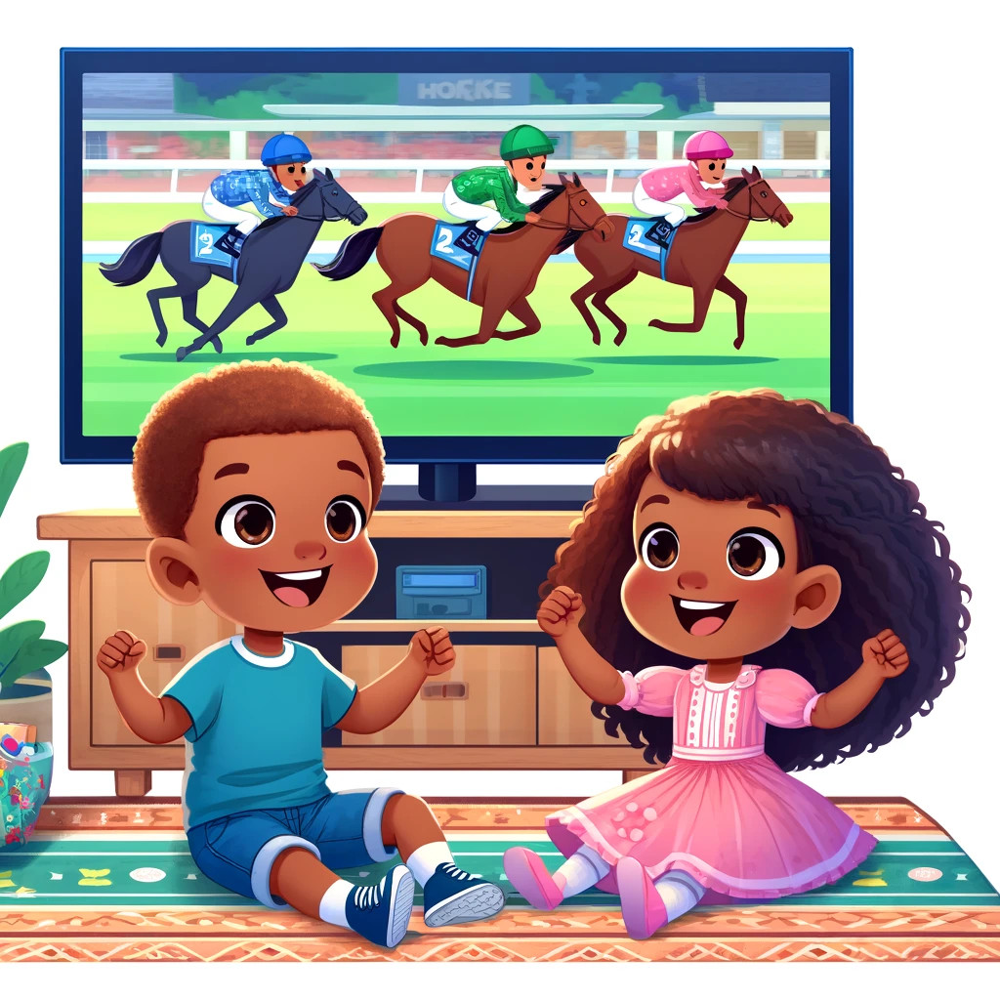

19th June 2025
Well well, hello Skibidi Toilet!
(That one’s for my second son.)
It’s been a while, so I figured it was time for a little update.
One of the family backed the winner in the Grand National again—wow, that feels like ages ago now.
I’ve bought a 1965 BSA Bantam D7 (not sure if I’ve blogged about that before). Classic ADHD kicked in, and now it’s in pieces. The dream is to build a trials bike out of it.
On the tech front, I’ve been a bit overwhelmed by clutter and mess lately, so I’ve taken a bit of a step back. That said, I did manage to build a retro game emulator on a Pi 400 using an 8BitDo controller. Totally worth it. Also, it’s really nice having a clear desk again.
When’s the next update? Who knows. Stay tuned!
17th June 2024. At a Crossroad.
With regards to the website development I feel like I have reached a point where it's becoming increasingly challenging for me, either from lack of experience or from my own time restraints.
The website is very simple and not much more than a four-page website.
(Home, About, Blog, Projects.)
Home page and About page are likely to remain unchanged. My focus is now on blogging and project posts only. Again, I'm not sure when or how often.
13th April 2024
Can you believe it? My twins backed 1st and 5th place horses, both winning them some money!
(We all have a horse each every Grand National day.)
11th April 2024

One from the archives. I'm proud of myself, and I'm proud of my brother too.
8th April 2024
The website is live, I'm happy with how it is.
Still need to buy a domain name and a few little bits.
3rd April 2024
Trying to polish up the unwanted parts of the website.
Possibility I might publish the site unfinished and work on it behind the scenes.